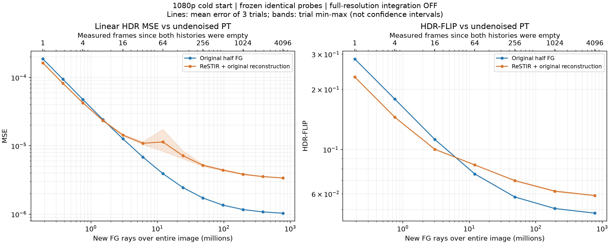
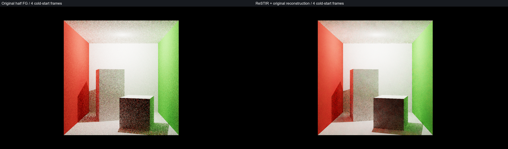
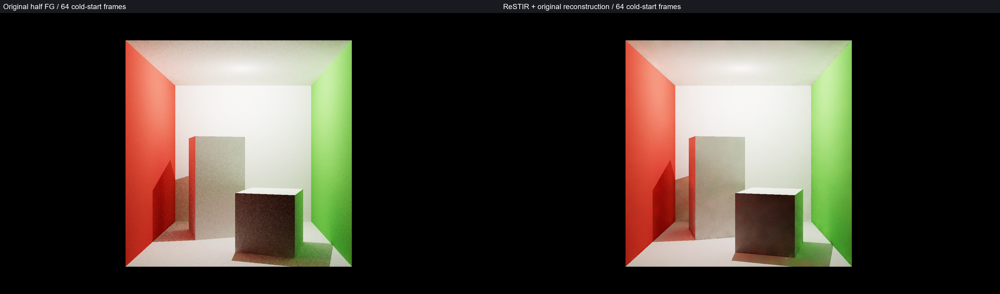

本次只比较半分辨率着色＋原来的 16 邻域重建，全分辨率积分关闭，NRD 关闭。统计三个独立随机帧号区间的误差均值；没有把三次图像平均成一张图以增加采样预算。阴影带是三次结果的最小值至最大值，不是统计置信区间。
结果：在相同的新 FG 样本预算下，这版 ReSTIR 确有很低预算的收益：1–8 帧的 MSE 低约 3–13%，但到 16 帧 MSE 已高约 13%，64 帧约为原 FG 的 2.91 倍。HDR-FLIP 的收益维持到已测的 16 帧（低约 11%），64 帧则更差。因此不能仅凭最终收敛结果否认短时收益，但本次也没有证明它能持续加快收敛；结论仅针对当前 Falcor 适配实现和该场景。

| 测量帧 | 新增 FG 射线 / 百万 | 原 FG MSE | ReSTIR MSE | MSE 比值 ReSTIR/FG | 原 FG HDR-FLIP | ReSTIR HDR-FLIP |
|---|---|---|---|---|---|---|
| 1 | 0.189 | 0.00018731 | 0.000163233 | 0.871 | 0.28390 | 0.23049 |
| 4 | 0.757 | 4.76416e-05 | 4.26575e-05 | 0.895 | 0.17882 | 0.14511 |
| 16 | 3.024 | 1.26884e-05 | 1.4362e-05 | 1.132 | 0.11236 | 0.10025 |
| 64 | 12.096 | 3.9186e-06 | 1.13875e-05 | 2.906 | 0.07545 | 0.08371 |
| 256 | 48.386 | 1.72347e-06 | 5.20187e-06 | 3.018 | 0.05784 | 0.06986 |
| 1024 | 193.544 | 1.16828e-06 | 3.84426e-06 | 3.291 | 0.05063 | 0.06186 |
| 4096 | 774.175 | 1.03202e-06 | 3.38585e-06 | 3.281 | 0.04801 | 0.05882 |
同一 1920×1080 Lambert Cornell、相机和灯光。预热期间关闭 FG、ReSTIR 和 Accumulate，只更新 probe 8192 帧；随后冻结 probe。4096→8192 帧的直接 probe 输出相对 RMS 变化为 0.315%，两方案冻结时的输出逐像素完全相同。探针是带有限滞后的随机估计，稳定不等于严格无噪声；冻结确保整个比较使用同一个固定 GI 场。
测量第一帧之前开启 FG、按方案开启 ReSTIR，并重置 Accumulate；reservoir 第一次分配时历史无效。首帧所有有效采样位置的时间 M=1，确认没有继承预热样本。空间阶段可以复用本帧邻居样本，这些已计入整幅图的射线预算。测量期间 probe 更新次数始终为 8192，reservoir 只初始化一次。
每帧每个有效半分辨率表面位置发射一条新 FG 路径。按实际表面 mask 和八帧相位计数，而非把所有 960×540 位置（包括背景）都算作射线；首帧 189,225 条。两方案位置及预算相同。已检查 ReSTIR 各 checkpoint 的自身 reservoir 着色均接受一个有效样本，没有额外 fallback FG 路径。Lambert 场景无镜面 FG。额外的复用可见性／直接照明阴影射线不计作新 FG 候选，但计入 GPU 成本，因此这是相同采样预算，不是相同总 TraceRay 次数或相同耗时。
三次测量的随机帧号分别从 8192、12288、16384 开始，各测 4096 帧；跳过区间中关闭 FG 和 probe 更新，不产生可用的采样历史。原 FG 仍使用 Lambert 余弦半球采样，当前 ReSTIR 使用均匀半球初始采样；这是现有两条完整路径的比较，并非只改变重采样模块的严格消融实验。ReSTIR 为时间 M 上限 20、空间两轮×4 邻居、半径 8 粗像素。
MSE 在可见表面 mask 内对线性 HDR RGB 计算；HDR-FLIP 固定使用之前的 PPD/曝光参数。参考为同场景未降噪 PT 65536 spp。误差包括有限样本方差以及 DDGI、复用和重建近似；不能把低误差平台自动解释为已经收敛到正确积分。
冻结 probe 后的整图 GPU 帧耗时（三次均值，不含预热、编译、截图）：原 FG 0.937 ms，ReSTIR 1.621 ms。这里 probe 不再更新，因此不能直接和先前开启 probe 更新的耗时比较。
统一 +3EV/ACES/sRGB 显示。1 帧 · 4 帧 · 16 帧 · 64 帧 · 256 帧

